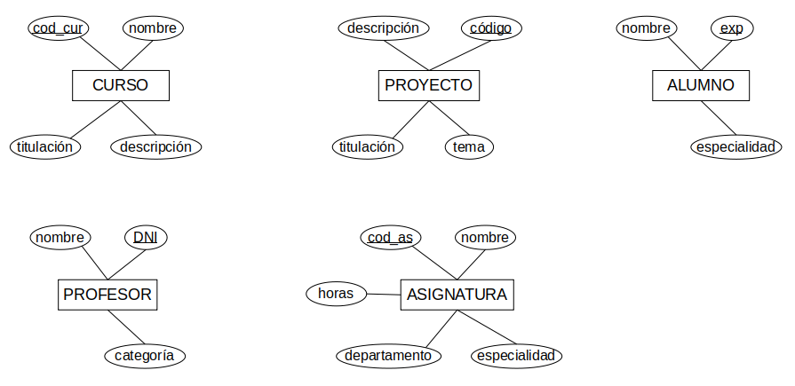
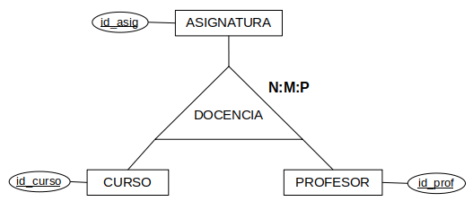
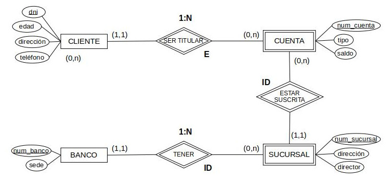
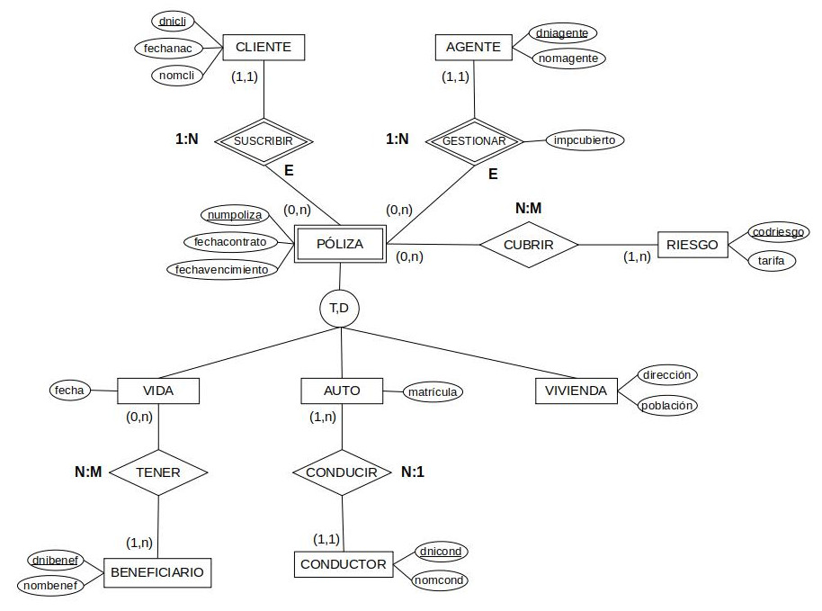
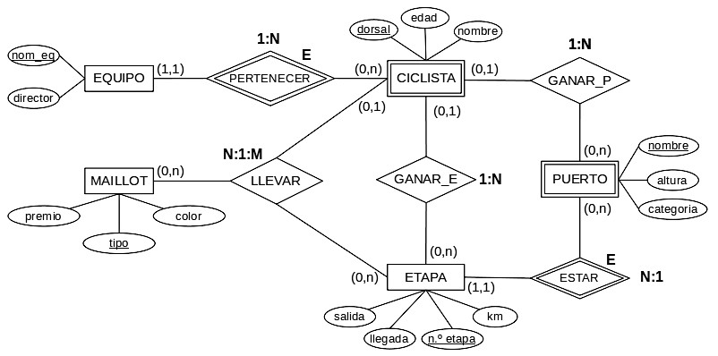
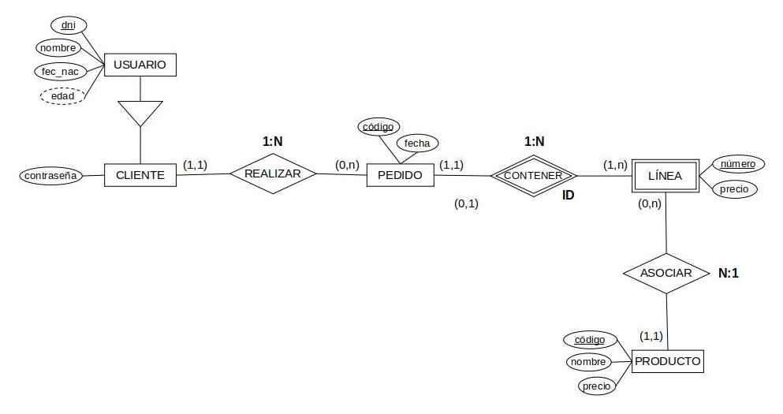
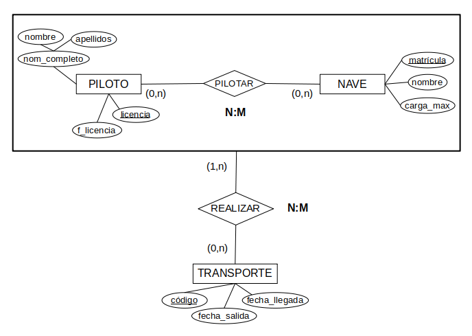

Actividades Boletín B - Soluciones
El enunciado es común a todos ellos: transforma a modelo relacional los siguientes esquemas E-R, definiendo el dominio de los atributos solo cuando lo indique.
En los esquemas en los que no aparezcan las participaciones, puedes asumir que todas las mínimas son cero (no hay cardinalidad mínima). Respecto a las máximas, el rombo relleno indica una participación de x,N en el lado indicado, donde x (mínima) será cero si no se indica nada.
Es ESENCIAL que indiques si hay pérdida semántica o no en cada uno de los casos y, en caso afirmativo, qué restricciones de integridad establecerías.
Ejercicio 1. Asignatura
Transforma a Modelo Relacional las siguientes entidades definiendo el dominio de los atributos.

Solución
-
CURSO (cod_cur, nom_cur, titulación_cur, descripción_cur)
CP: cod_cur
PROYECTO (cod_proy, tema, titulación_proy, descripción_proy)
CP: cod_proy
ALUMNO (exp, nom_alu, especialidad)
CP: exp
PROFESOR (dni, nom_prof, categoría)
CP: dni
ASIGNATURA (cod_asig, nom_asig, horas, departamento, especialidad_asig)
CP: cod_asig
Dominios:
cod_cur: cadena(10)
nom_cur: cadena(20)
titulación_cur: cadena(100)
descripción_cur: cadena(200)
cod_proy: cadena(10)
tema: cadena(20)
titulación_proy: cadena(100)
descripción_proy: cadena(200)
nom_alu: cadena(20)
exp: numerico(5)
especialidad: cadena(100)
nom_prof: cadena(20)
dni: cadena(10)
categoría: cadena(100)
nom_asig: cadena(20)
cod_asig: cadena(10)
horas: numerico(4)
departamento: cadena(20)
especialidad_asig: cadena(100)
Restricciones de integridad:
No hay restricciones adicionales.
Ejercicio 2. Docencia
Transforma a Modelo Relacional sin necesidad de poner los dominios de los atributos.

Solución
-
CURSO (id_curso)
CP: id_curso
PROFESOR (id_prof)
CP: id_prof
ASIGNATURA (id_asig)
CP: id_asig
DOCENCIA (id curso, id asig, id prof)
CP: {id_curso, id_asig, id_prof}
CAj: id_curso → CURSO (id_curso)
CAj: id_prof → PROFESOR (id_prof)
CAj: id_asig → ASIGNATURA (id_asig)
Restricciones de integridad:
No hay restricciones adicionales.
Atención
Es necesaria una restricción de integridad por pérdida semántica por cada relación con alguna participación (1,n) al no poderse representar las participaciones mínimas en esas situaciones.
En ternarias, es necesaria una restricción de integridad por pérdida semántica por cada participación mínima 1 o condiciones individuales/binarias en la relación.
En especializaciones, sería necesario restricciones de integridad si son distintas a P+S.
Ninguno de los casos anteriores se refleja aquí, como si un profesor está obligado a impartir docencia, por ejemplo. Así que no hay restricciones de integridad adicionales.
Ejercicio 3. Bancos
Transforma a Modelo Relacional sin necesidad de poner los dominios de los atributos.

Solución
-
CLIENTE (dni, edad, dirección, teléfono)
CP: dni
BANCO (num_banco, sede)
CP: num_banco
SUCURSAL (num_sucursal, num_banco, dirección, director)
CP: {num_sucursal, num_banco}
CAj: num_banco → BANCO (num_banco) B:C
CUENTA (num_cuenta, num_sucursal, num_banco, tipo, saldo, dni*)
CP: {num_cuenta, num_sucursal, num_banco}
CAj: {num_sucursal, num_banco} → SUCURSAL (num_sucursal, num_banco) B:C
CAj: dni → CLIENTE (dni) B:C
VNN: dni
Restricciones de integridad:
No hay restricciones adicionales.
Atención
Las debilidades de identificación deben resolverse primero, pues modifican las CP y afectan a las otras transformaciones. Cuando existen varias relacionadas se deben resolver en el orden correcto.
En este caso la SUCURSAL ayuda a identificar la CUENTA, pero necesita a su vez al banco para su propia identificación, con lo que la CP de la SUCURSAL que debe trasladarse a la CUENTA es la completa después de resolver su debilidad. No se puede resolver la tabla CUENTA primero.
Por otro lado, conviene recordar también que en estos casos {num_sucursal, num_banco} es la CP de SUCURSAL, con lo que al trasladarse a otras tablas por relaciones debe hacer referencia a tuplas de la propia tabla SUCURSAL, por lo que la referencia es una sola CAj apuntando a SUCURSAL. El num_banco no apunta al BANCO, no vale que el BANCO exista, debe existir una tupla con ese num_banco+num_sucursal en la tabla SUCURSAL, esa es la clave de SUCURSAL que se traslada a CUENTA, no la clave de BANCO y la débil de SUCURSAL por separado.
Ejercicio 4. Seguros
Transforma a Modelo Relacional sin necesidad de poner los dominios de los atributos.

Solución
-
CLIENTE (dnicli, fechanac,nomcli)
CP: dnicli
AGENTE (dniagente, nomagente)
CP: dniagente
CONDUCTOR (dnicond, nomcond)
CP: (dnicond)
RIESGO (codriesgo, tarifa)
CP: codriesgo
BENEFICIARIO (dnibenef, nombenef)
CP: dnibenef
PÓLIZA (numpoliza, fechacontrato, fechavencimiento, dnicli*, dniagente*, impcubierto)
CP: numpoliza
CAj: dnicli → CLIENTE (dnicli) B:C
CAj: dniagente → AGENTE (dniagente) B:C
VNN: dnicli
VNN: dniagente
PÓLIZA_VIDA (numpoliza, fecha)
CP: numpoliza
CAj: numpoliza → PÓLIZA (numpoliza)
PÓLIZA_AUTO (numpoliza, dnicond*, matrícula)
CP: numpoliza
CAj: numpoliza → PÓLIZA (numpoliza)
CAj: dnicond → CONDUCTOR (dnicond)
VNN: dnicond
PÓLIZA_VIVIENDA (numpoliza, dirección, población)
CP: numpoliza
CAj: numpoliza → PÓLIZA (numpoliza)
CUBRIR (numpoliza, codriesgo)
CP: {numpoliza, codriesgo}
CAj: numpoliza → PÓLIZA (numpoliza)
CAj: codriesgo → RIESGO (codriesgo)
TENER (numpoliza, dnibenef)
CP: {numpoliza, dnibenef}
CAj: numpoliza → PÓLIZA_VIDA (numpoliza)
CAj: dnibenef → BENEFICIARIO (dnibenef)
Restricciones de integridad:
Tenemos 3 participaciones (1,n) que obligan a 3 restricciones de integridad:
- Toda PÓLIZA debe CUBRIR al menos un RIESGO. Por tanto la tabla CUBRIR (N:M) debe tener al menos una tupla para cada PÓLIZA.
- Análogamente, la tabla TENER (N:M) debe tener al menos una tupla para cada PÓLIZA_VIDA.
- En la tabla PÓLIZA_AUTO, todo CONDUCTOR debe aparecer al menos una vez (1:N).
Al tener una especialización distinta a P+S tenemos que incluir esta restricción:
- Toda póliza debe aparecer necesariamente en una de estas tablas: vida, auto o vivienda (por ser esp. total) y solo en una de ellas (esp. disyunta). Implementamos la T+D como si fuera una P+S y añadimos la restricción de integridad anterior.
Atención
Ten en cuenta que a pesar de ser una especialización total y disyunta, eliminar la tabla de Pólizas no parece una buena opción, pues hay varias relaciones en este supertipo que tendríamos que repetir para cada uno de los subtipos si lo hiciésemos. Además, es fácil deducir que las consultas sobre todas las pólizas de un CLIENTE o que lleve un AGENTE serán recurrentes, con lo que resulta aún menos conveniente.
Ejercicio 5. Ciclismo
Transforma a Modelo Relacional sin necesidad de poner los dominios de los atributos.

Solución
-
EQUIPO (nomeq, director)
CP: nomeq
CICLISTA (dorsal, nombre, edad, nomeq*)
CP: dorsal
CAj: nomeq → EQUIPO (nomeq) B:C
VNN: nomeq
ETAPA (numetapa, km, salida, llegada, dorsal)
CP: numetapa
CAj: dorsal → CICLISTA (dorsal)
PUERTO (nombre, altura, categoria, numetapa*, dorsal)
CP: nombre
CAj: numetapa → ETAPA (numetapa) B:C
CAj: dorsal → CICLISTA (dorsal)
VNN: numetapa
MAILLOT (tipo, premio, color)
CP: tipo
LLEVAR (numetapa, tipo, dorsal*)
CP: {numetapa, tipo}
CAj: numetapa → ETAPA (numetapa)
CAj: tipo → MAILLOT (tipo)
CAj: dorsal → CICLISTA (dorsal)
VNN: dorsal
RESTRICCIONES DE INTEGRIDAD
No hay restricciones adicionales.
Atención
Se podría plantear participaciones mínimas de CICLISTA en LLEVAR, de PUERTO en GANAR_P y de ETAPA en GANAR_E, lo que sería útil si la base de datos almacena información de la competición ya finalizada, puesto que todos los MAILLOTS se LLEVAN en todas las ETAPAS, y todos los PUERTOS y ETAPAS son GANADOS por un CICLISTA. Estos 3 detalles requerirían restricciones de integridad adicionales, pero no son las participaciones mínimas las que se indican en el enunciado. Éste permite almacenar información de la competición en curso, donde aún faltan datos sobre el transcurso de las ETAPAS.
Ejercicio 6. Ventas
Transforma a Modelo Relacional sin necesidad de poner los dominios de los atributos.

Solución
-
USUARIO (dni, nombre, fec_nac, edad)
CP: dni
edad = fec_actual()- fec_nac
CLIENTE (dni, contraseña)
CP: dni
CAj: dni → USUARIO (dni)
PRODUCTO (código, nombre, precio)
CP: código
PEDIDO (código, fecha, dni*)
CP: código
CAj: dni → CLIENTE (dni)
VNN: dni
LÍNEA (número, cod_pedido, cod_producto*, precio, cantidad)
CP : {número, cod_pedido}
CAj: cod_pedido → PEDIDO (código) B:C
CAj: cod_producto → PRODUCTO (código)
VNN: cod_producto
Aclaración
Aclaración: en "cod_pedido" no hace falta poner VNN porque es parte de la clave primaria.
Restricciones de integridad:
Sería necesaria una RESTRICCIÓN DE INTEGRIDAD para comprobar que todo pedido tiene como mínimo una línea.
- Todo PEDIDO debe aparecer al menos una vez en la tabla LÍNEA por la participación mínima (1,n) de PEDIDO en CONTENER (1:N).
Ejercicio 7. Transporte aéreo
Transforma a Modelo Relacional sin necesidad de poner los dominios de los atributos.

Solución
-
PILOTO (licencia, nom_completo.nombre, nom_completo.apellidos, f_licencia)
CP: licencia
NAVE (matrícula, nombre, carga_max)
CP: matrícula
PILOTAR (licencia, matrícula)
CP: {licencia, matrícula}
CAj: licencia → PILOTO (licencia)
CAj: matrícula → NAVE (matrícula)
TRANSPORTE (código, fecha_salida, fecha_llegada)
CP: código
REALIZAR (código, licencia, matrícula)
CP: {código, licencia, matrícula}
CAj: código → TRANSPORTE (código)
CAj: {licencia, matrícula} → PILOTAR (licencia, matrícula)
Restricciones de integridad:
Sería necesaria una RESTRICCIÓN DE INTEGRIDAD para comprobar que todo transporte es realizado como mínimo por un piloto con una nave.
- Todo TRANSPORTE debe aparecer al menos una vez en la tabla REALIZAR (N:M) por la participación mínima 1.
Aunque el enunciado no lo explicita, debemos tener en cuenta restricciones adicionales (RA) en algunas tablas, puesto que en caso contrario no tendría sentido la información almacenada.
- (RA1) Tabla TRANSPORTE: fecha_salida debe ser anterior a fecha_llegada.
- (RA2) Tabla REALIZAR: debe comprobarse que los pilotos y las naves no se repitan en un mismo transporte.